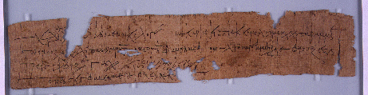

Receipt for Three Sextarii
of Oil.
AM 4123 (=P. Oxy. VII 1043), 578 AD

Also
available: a larger image (226k)
Background and Physical Properties
Publ./Side: Recto
Material: Papyrus
Items: 1
Size: 6.6 x 33.5 cm.
Lines: 4
Negative: Transparency
Conservation Status:
Status: Published
--------------------------------------------
Contents
Date: 578 AD
Provenance: Oxyrhynchus, Oxyrhynchite nome, province of Egypt
Acquisition: AM 4123
Language: Greek
Genre: Documentary
Author: Unknown
Type of Text/Title of Work: Receipt
Content: Receipt for three sextarii of oil.
--------------------------------------------
Information on Publications
First edition:
Series and volume: The Oxyrhynchus Papyri VII
Editor: A. S. Hunt
Year: 1910
Pg/Nr: 1043
Photo: